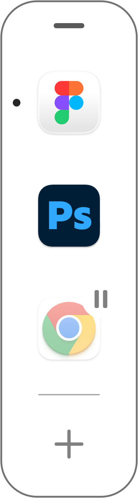

Your workflow,
within reach.
Switch between your Mac apps
from one tiny floating strip.
Apple silicon · Experimental, not notarized.
Native macOS macOS 14+ v0.1.1

Switch.
Move between your
working apps.
Put aside.
Hide an app. Bring it back
when needed.
Carry on.
Keep your place without
quitting.
Small app.
Still growing.
Rail is an early development preview. App switching and app hiding are tested. Individual-window controls are still being validated.
Parking hides or minimizes. Apps keep running.
Preview builds are locally signed. Not notarized yet.
See development status (opens in a new tab)